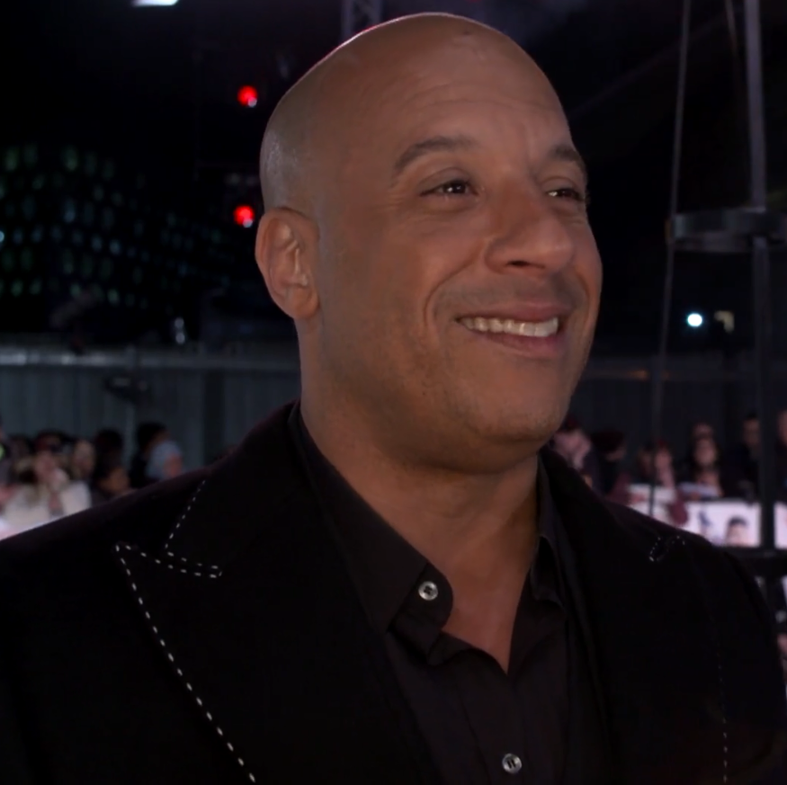
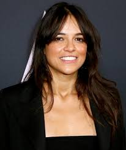
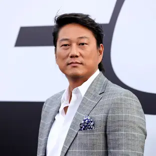
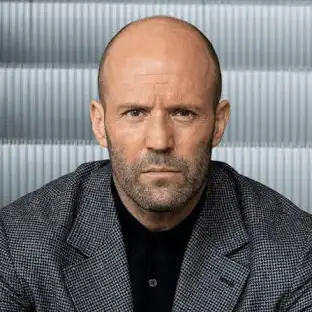
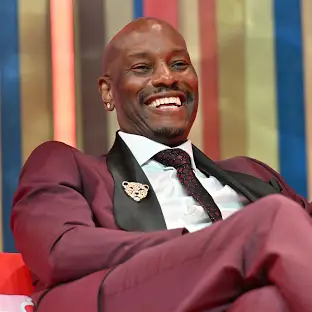
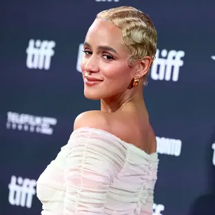
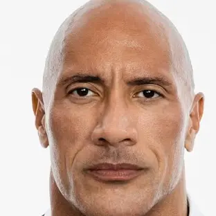

Sinopse
No décimo filme da série Velozes & Furiosos e último da nova trilogia (Velozes 8, 9 e 10), ao longo de muitas missões e contra probabilidades que pareciam impossíveis, Dom Toretto (Vin Diesel) e sua família foram mais espertos e superaram todos os inimigos em seu caminho. Agora, eles devem desafiar o adversário mais letal que já enfrentaram. Alimentada pela vingança, uma ameaça terrível emerge das sombras do passado na forma de Dante (Jason Momoa), para destruir o mundo de Toretto e destruir tudo - e todos - que ele ama. Ele então, comandando novamente a equipe de corredores mais conhecida do mundo, encara mais uma difícil missão sobre quatro rodas. O fim da estrada começa e Velozes & Furiosos 10 lança os capítulos finais de uma das franquias globais mais famosas e populares do cinema, agora em sua terceira década e ainda forte com o mesmo elenco e personagens centrais de quando começou..Elenco

Vin Diesel
Dom Toretto
Jason Momoa
Dante
Alan Ritchson
Aimes

Michelle Rodriguez
Letty
Rita Moreno
Abuelita Torreto
Brie Larson
Tess

Sung Kang
Han Lue

Jason Statham
Deckard Shaw

Tyrese Gibson
Roman
Charlize Theron
Cipher
Jordana Brewster
Mia Toretto

Nathalie Emmanuel
Ramsey
John Cena
Jakob Toretto
Ludacris
Tej Parker
Helen Mirren
Queenie

Dwayne Johnson
Hobbs
Meadow Rain Walker
flight attendant
Trailer
Curiosidades
- Despedida prolongada:De acordo com o próprio Vin Diesel, o filme 'Velozes e Furiosos 10' (2023) está cotado para ser a primeira parte do desfecho da franquia - que pode acabar virando uma trilogia.
- Brasil no elenco: Ludmilla fará uma participação especial em 'Velozes e Furiosos 10', que também conta com uma música da cantora na trilha sonora.
- Retorno especial:Após o intenso apelo da campanha on-line "Justice For Han", o personagem do ator Sung Kang está de volta. Ele sugeriu que os fãs da saga também se mobilizassem para o retorno de Gisele, interpretada por Gal Gadot..
- O legado Paul Walker:Meadow Walker, filha do ator falecido em 2013 e afilhada de Vin Diesel, chegou para representar o legado do pai. A jovem modelo deve fazer uma participação curta, porém marcante, no novo filme.